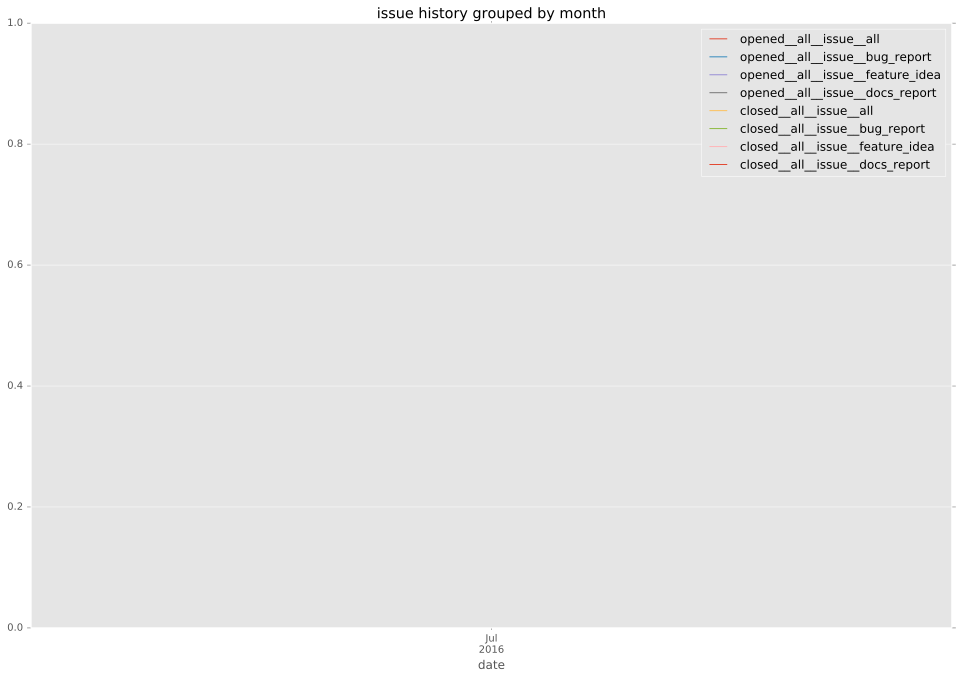
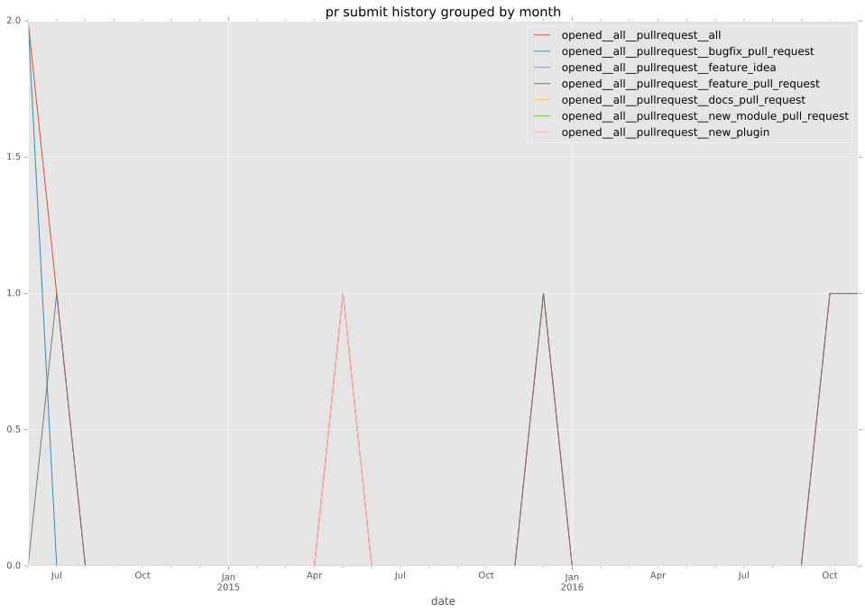
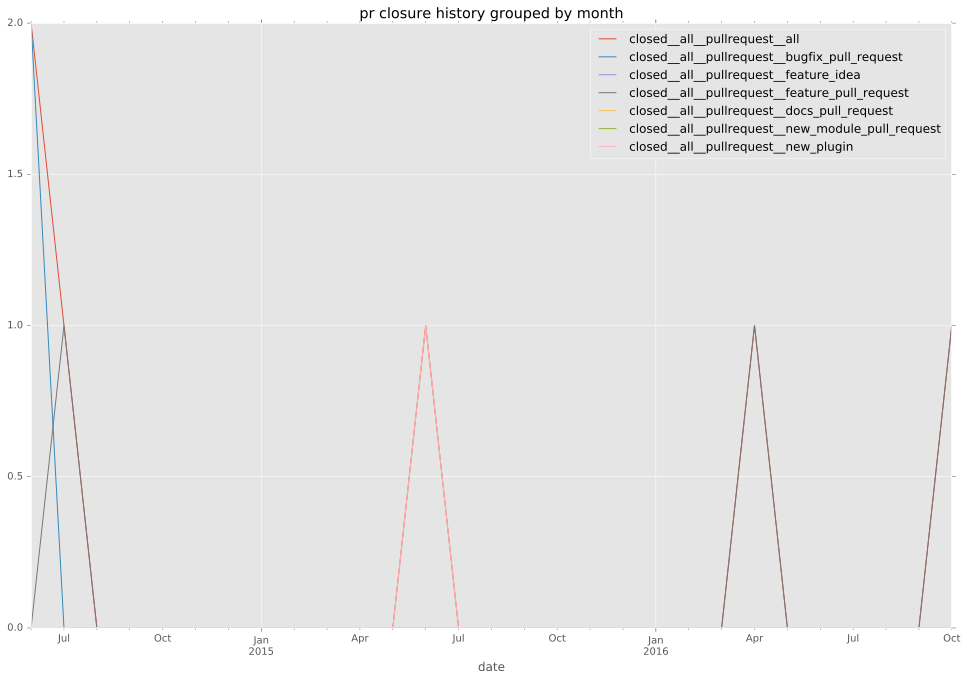
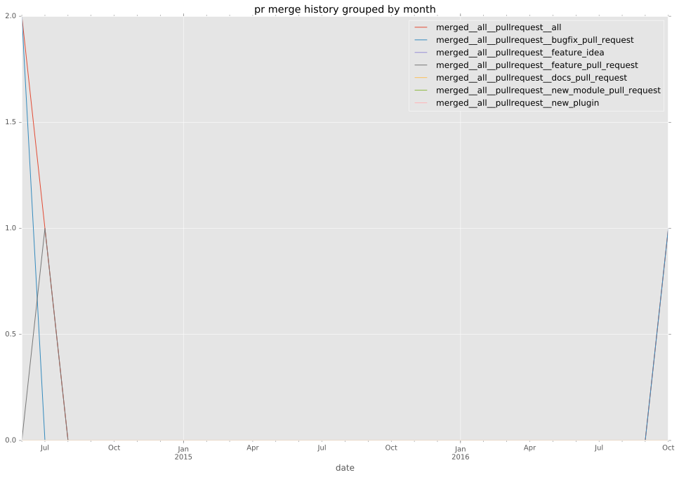
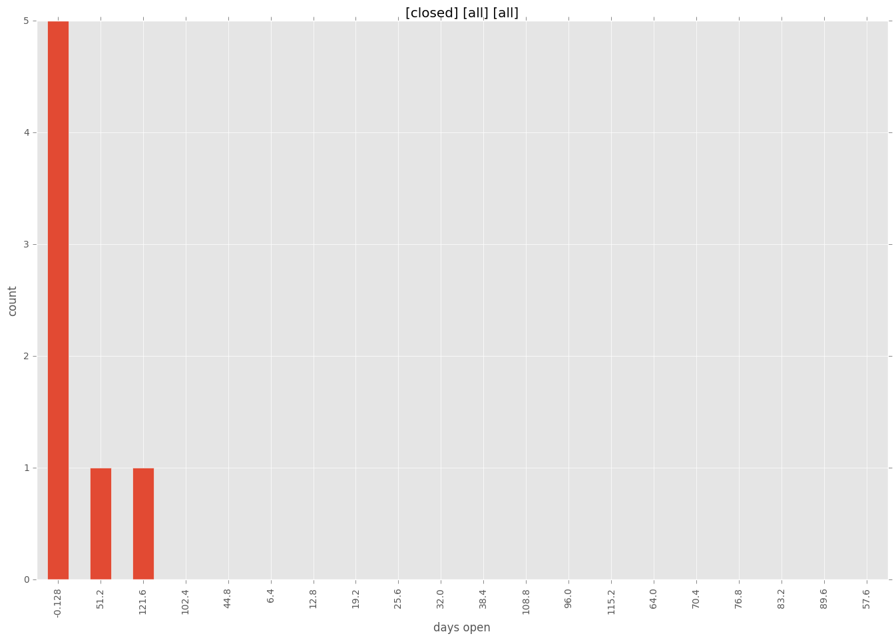

authors
- chrishoffman
maintainers
- chrishoffman
contributors
- chrishoffman : 20 commits
- cchurch : 10 commits
total issue counts
bugfix pull request: 3
pullrequest: 6
feature pull request: 2
issue: 1
new plugin: 1
bug report: 1
issue history

pullrequest history



days open by issue type
feature pull request
count: 3
std: 73.3234841871
min: 1
max: 128
median: 1.0
mean: 43.3333333333
all
count: 11
std: 40.0982883335
min: 0
max: 128
median: 0.0
mean: 16.5454545455
pullrequest
count: 0
std: nan
min: nan
max: nan
median: nan
mean: nan
bugfix pull request
count: 6
std: 0.0
min: 0
max: 0
median: 0.0
mean: 0.0
issue
count: 0
std: nan
min: nan
max: nan
median: nan
mean: nan
new plugin
count: 1
std: nan
min: 52
max: 52
median: 52.0
mean: 52.0
bug report
count: 1
std: nan
min: 0
max: 0
median: 0.0
mean: 0.0
closures grouped by total days open
